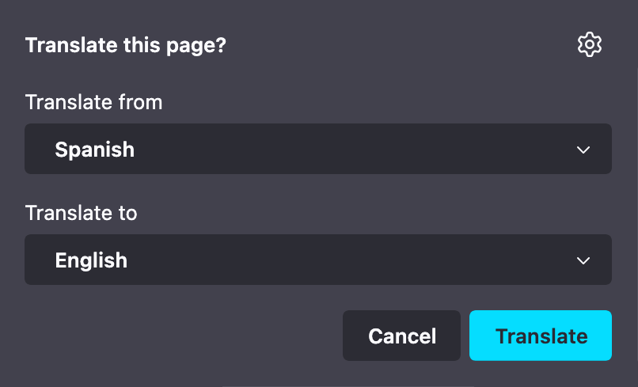

mozilla/translations
mozilla/translations
The training platform and inference engine that powers Firefox Translations

Learn about the end-to-end process of training translation models, including data preparation, training steps, and evaluation.
Visualize and track training runs.
Browse all trained models for Firefox Translations. Track model versions and quality evaluations.
Compare translation quality across systems using multiple metrics and datasets.
See the currently released models that are in Firefox, Beta, and Nightly.
Monitor active training jobs, view logs, track training metrics, and troubleshoot issues.
Analyze Marian models and inspect the model architecture and values of the weights.
Estimate the financial costs of actual training runs.